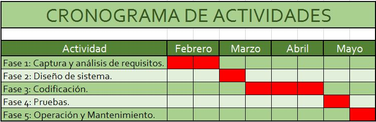

AUTOR
NOMBRE: JHON FREDY
APELLIDOS: LOPEZ GOMEZ
GRUPO: 301127_31
CEDULA: 71385531
SKYPE: JFREDY.LOPEZ
MOVIL: 3113450141
CORREO: jfredy.lopez@gmail.com
PROPUESTA SITIO WEB
¿Cómo mejorar el sistema de inventarios y facturación de la empresa “Texas Electronics” mediante el diseño de un aplicativo Web?
OBJETIVOS
GENERAL
Desarrollar un sistema de información que ofrezca a los clientes y empleados de la empresa “Texas Electronics” información confiable sobre sus inventarios y facturación.
ESPECIFICO
- Tener en tiempo real toda la información de inventarios y facturación para que la empresa tome las mejores decisiones.
- Mejorar la información de las ventas para realizar una mejor planeación de compras a proveedores.
- Manejar de forma automática los precios, impuestos, descuentos y márgenes de ganancia de cada uno de los productos.
METODOLOGIA DE DESARROLLO
ESTRUCTURADA
- Se maneja como proyecto.
- Gran volumen de datos y transacciones.
- Abarca varias áreas organizativas de la empresa.
- Tiempo de desarrollo largo.
- Requiere que se cumplan todas las etapas, para poder cumplir las siguientes (progresión lineal y secuencial de una fase a la otra).

- Fase 1: Captura y análisis de requisitos.
- Fase 2: Diseño de sistema.
- Fase 3: Codificación.
- Fase 4 pruebas.
- Fase 5: Operación y Mantenimiento.
REQUERIMIENTOS ESPECIFICOS DEL APLICATIVO
FUNCIONAL
- El sistema deberá verificar la autenticación de ingreso por parte de los usuarios autorizados.
- Administrar la información de los productos.
- Obtener información de los productos mediante búsquedas de código o nombres.
- Generar reporte s de compras después de haber realizado dicha operación.
- Cada vez que el usuario realice una venta, el sistema deberá ser capaz de descontar la cantidad vendida de los productos.
- El sistema deberá ser capaz de verificar que la cantidad requerida por los clientes existen en el inventario. Si no hay la cantidad requerida
se emitirá un mensaje de alerta dando a conocer las cantidades actuales de los productos en inventario.
- Al final de la venta el sistema deberá ser capaz de generar la factura de venta.
- Los usuarios que manejaran el sistema son:
- LOGISTICA: Ingresar la llegada de inventario, nuevos productos y actulizacion de informacion
- ADMINISTRATIVO: Consulta de información de ventas.
- CLIENTES: Quienes realizaran las compras via internet.
- DESARROLLADOR: Analistas y desarrolldores que daran mantenimiento al software
FINALIDAD DEL PROYECTO
Este proyecto pretende crear un sistema de información que permita mantener actualizado en tiempo real el sistema de
inventario y facturación de la empresa “Texas Electronics”.
CRONOGRAMA

El sistema de manejo de inventarios y facturación tiene un impacto positivo ya que permite manejar todo el inventario
en tiempo real mejorando la experiencia del cliente al momento de realizar las compras y recibir sus pedidos, a nivel económico el
sistema tendrá un costo que será rápidamente redimido porque ayudara a que las ventas mejoren ya que los clientes estarán más
satisfecho y además ayudara a que los inventarios estén actualizados y se pueda identificar que productos adquirir con los proveedores
por medio de alertas de inventario bajos, a nivel tecnológico se mejorara el sistema actual agregándole nuevas funcionalidades
que ayudan al manejo de la facturación y los informes de ventas además tendrá una interfaz muy amigable y fácil de usar por parte
de los clientes y del personal de logística, a nivel social se realizaran capacitaciones al personal y no se afectaran los puestos de
trabajo actuales.
What is the client server architecture?
The client-server architecture is a distributed application model in which the tasks are divided between the providers of resources or services, called servers,
and the plaintiffs, called clients. A client makes requests to another program, the server, who answers it. This idea can also be applied to programs that run on a single
computer, although it is more advantageous in a multi-user operating system distributed through a computer network.
In this approach, and with the objective of defining and defining the reference model of a Client / Server architecture, 5 components are identified that allow to
articulate said architecture, considering that every application of an information system is characterized by the following:
- Presentation / Collection of information.
- Processes.
- Information storage.
- Job positions.
- Communications.
What is the model vista controller?
Model Vista Controller (MVC) is a style of software architecture that separates data from an application, user interface,
and control logic into three distinct components.
It is a very mature model that has proven its validity over the years in all types of applications, and on many languages and development platforms.
- The Model that contains a representation of the data handled by the system, its business logic, and its persistence mechanisms.
- The Vista, or user interface, that composes the information that is sent to the client and the interaction mechanisms with it.
- The Controller, which acts as an intermediary between the Model and the View, managing the flow of information between them and the transformations to adapt the data to the needs of each one.
INSTALACION Appserv
Configuracion del Puerto

Configuracion de la Contraseña

Navegador con localhost

Autenticacion en al aplicativo

Aplicativo funcional